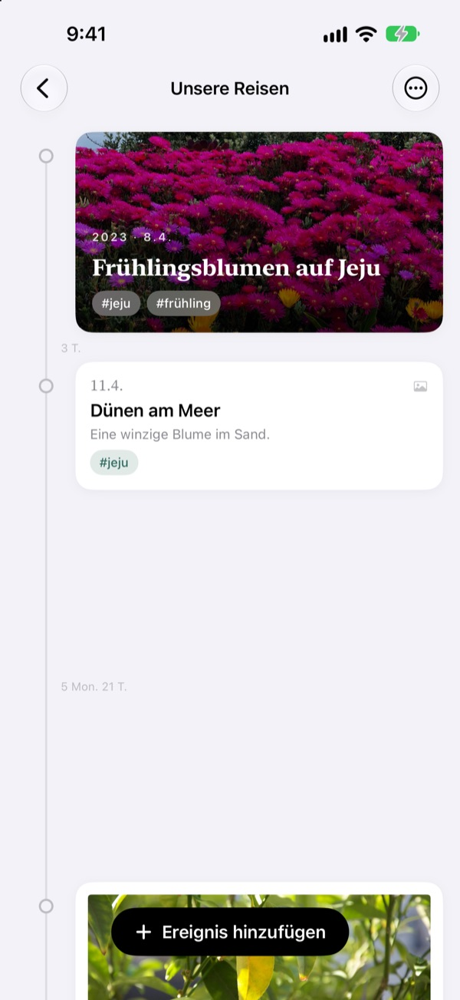
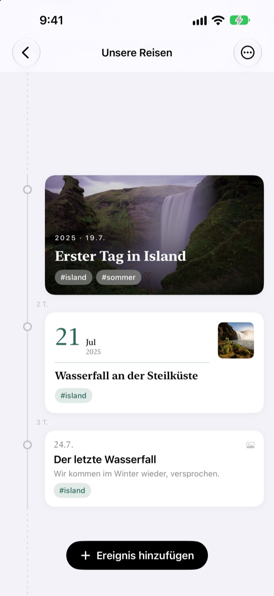
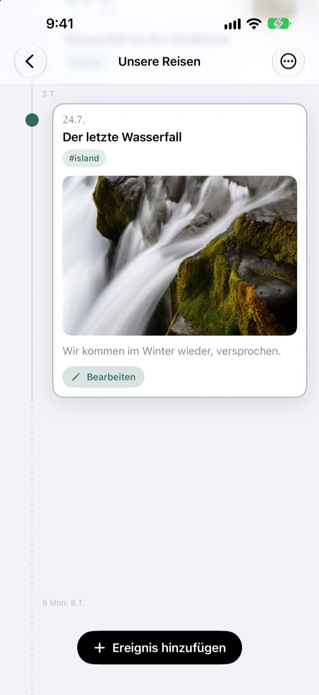
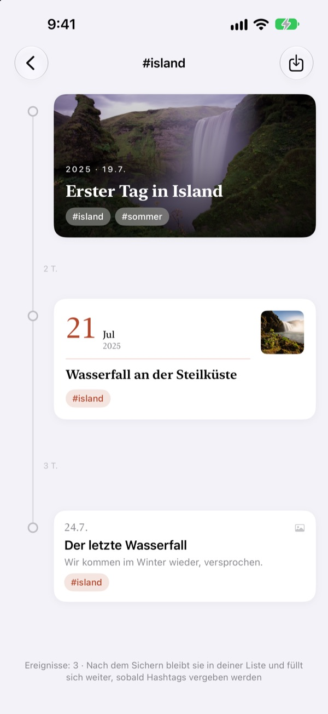
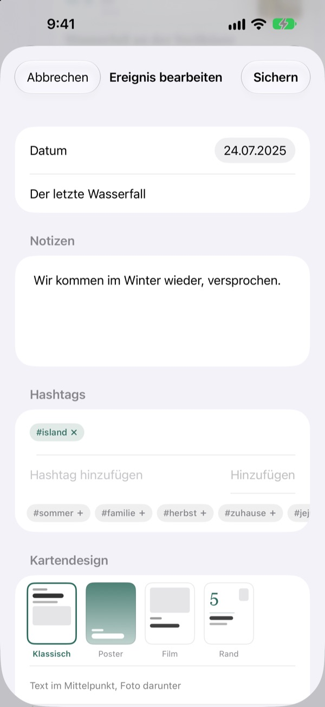

Eine Zeitleiste,
die mit der Zeit wächst
Drei Tage und fünf Tage stehen im Verhältnis 3:5. Eine lange Pause wie zwei Jahre und vier Monate faltet sich zu einer gestrichelten Linie. Schon an den Abständen siehst du, wie die Zeit damals verging.
Alle Funktionen sind kostenlos. Für iPhone und iPad.

Zieh die Abstände selbst auseinander
Jeder Button setzt ein neues Ereignis hinter das letzte. Die Abstände folgen derselben Regel wie in der App.
In der Fotomediathek siehst du keine Zeit
Die Mediathek reiht alles nach Datum auf, aber drei Tage und zwei Jahre sind dort jeweils nur ein Schritt. Yeoul setzt Ereignisse so weit auseinander, wie Zeit dazwischen lag. So siehst du auf einen Blick, wann viel los war und wann es still wurde.
Der Abstand ist die Zeit
Die ganze Zeitleiste hat einen einzigen Maßstab: Gleich lange Zeiträume sind überall gleich lang. An jedem Abstand steht die echte Dauer, etwa 3 T. oder 5 Mon. 21 T.
Sehr nahe Ereignisse bekommen trotzdem etwas Luft, sehr lange Pausen falten sich zu einer gestrichelten Linie.

Sie findet die Fotos von diesem Tag
Leg das Datum fest und tippe auf Passende Fotos suchen: Du siehst die Fotos, die du an dem Tag gemacht hast. Nichts dabei? Mit Selbst suchen wählst du eines aus.
Tippst du auf ein Ereignis, öffnen sich Foto und Text direkt an seinem Platz.

Ein Hashtag sammelt verstreute Momente
Versieh Ereignisse mit einem Hashtag wie #Island und tippe darauf: Alle Ereignisse mit diesem Hashtag, aus allen Zeitleisten, landen in einer neuen.
Sicherst du sie, bleibt sie in deiner Liste und nimmt neue Ereignisse mit dem Hashtag von selbst auf.

Für jeden Moment die passende Karte
Klassisch stellt den Text in den Mittelpunkt, Poster füllt die Karte mit dem Foto, Film rahmt es wie einen Abzug, und bei Rand steht ein großes Datum im Vordergrund. Die Vorschau ändert sich sofort.

In drei Schritten startklar
- 1
Zeitleiste anlegen
Das erste Jahr deines Kindes, eine Beziehung, eine Reise: Gib jeder einen Namen und eine Farbe.
- 2
Ereignisse hinzufügen
Datum und Titel eintragen, ein Foto von dem Tag dazu.
- 3
Hashtags vergeben
Ereignisse mit demselben Hashtag finden über alle Zeitleisten zusammen.
Vier Kartendesigns
- Klassisch
- Der Text steht im Mittelpunkt, das Foto darunter.
- Poster
- Das Foto füllt die ganze Karte, darüber ein großer Titel. Ohne Foto erscheint die Farbe der Zeitleiste.
- Film
- Ein Foto mit Rand wie ein Abzug, dazu Schreibmaschinenschrift und Datumsstempel.
- Rand
- Eine große Datumszahl, ein kleines Foto. Hier spielt die Schrift die Hauptrolle.
Ein neues Ereignis übernimmt das Design der neuesten Karte in dieser Zeitleiste.
Alle Funktionen sind kostenlos
Kostenlos
- Beliebig viele Zeitleisten mit Name und Farbe
- Fotos, Texte und Hashtags für jedes Ereignis
- Fotos vom Tag des Ereignisses finden
- Hashtag-Zeitleisten sichern
- Vier Kartendesigns
- iCloud-Sync zwischen iPhone und iPad
- Ereignisse per Kurzbefehl und Siri festhalten
Den Entwickler unterstützen
- Wähl ein kleines, mittleres oder großes Trinkgeld
- Damit wird nichts freigeschaltet. Es ist einfach ein Dankeschön
Zu finden in den Einstellungen, ganz wie du magst.
Keine Werbung, kein Abo.
Häufige Fragen
Warum sind die Abstände zwischen Ereignissen so unterschiedlich?
Yeoul setzt Ereignisse so weit auseinander, wie wirklich Zeit vergangen ist. Alle Abstände haben denselben Maßstab, deshalb stehen drei und fünf Tage im Verhältnis 3:5. Sehr nahe Ereignisse bekommen einen Mindestabstand, damit sie sich nicht überlappen, und sehr lange Pausen falten sich zu einer gestrichelten Linie mit der echten Dauer, etwa 2 J. 4 Mon.
Ich sehe die Fotos von dem Tag nicht.
Für die Suche nach Datum braucht Yeoul Zugriff auf deine Fotos. Erlaube ihn unter Einstellungen > Yeoul > Fotos. Gesucht wird von Mitternacht bis Mitternacht in der Zeitzone deines Geräts. Möchtest du keinen Zugriff geben, tippe direkt darunter auf Selbst suchen und wähl ein Foto aus der Mediathek.
Was ist eine Hashtag-Zeitleiste?
Tippst du auf den Hashtag eines Ereignisses, sammelt Yeoul alle Ereignisse mit diesem Hashtag aus allen Zeitleisten in einer. Häufig genutzte kannst du in deiner Liste sichern. Dabei wird nichts kopiert: Änderst du das ursprüngliche Ereignis, siehst du das auch hier, und wenn du die Hashtag-Zeitleiste löschst, bleiben die Ereignisse erhalten.
Warum kann ich in einer Hashtag-Zeitleiste nichts hinzufügen?
Eine Hashtag-Zeitleiste ist eine gesammelte Ansicht, kein Behälter. Es ließe sich nicht festlegen, zu welcher Zeitleiste ein neues Ereignis gehört. Füg es in seiner eigenen Zeitleiste hinzu, vergib den Hashtag, und es erscheint hier von selbst.
Kann ich etwas festhalten, ohne die App zu öffnen?
Ja. Nutze Ereignis festhalten in der Kurzbefehle-App oder mit Siri und wähl nur Zeitleiste und Titel. Ohne Datum wird die aktuelle Uhrzeit verwendet.
Sehe ich meine Zeitleisten auch auf anderen Geräten?
Ja, auf jedem iPhone und iPad, das mit demselben Apple Account bei iCloud angemeldet ist. Prüf unter Einstellungen > dein Name > iCloud, ob iCloud aktiviert ist. Je nach Verbindung kann es einen Moment dauern.
Wie lösche ich meine Einträge?
Wisch eine Zeitleiste in der Liste nach links oder tippe auf Bearbeiten. Mit der Zeitleiste werden auch ihre Ereignisse gelöscht. Was noch in iCloud liegt, entfernst du in den iCloud-Einstellungen unter Speicher verwalten.
Sieht der Entwickler meine Einträge?
Nein. Einträge und Fotos liegen nur auf deinen Geräten und in deiner eigenen iCloud, der Entwickler kann sie nicht sehen. Mehr dazu in der Datenschutzerklärung unten.
Wie melde ich einen Fehler oder schlage etwas vor?
Direkt in der App über die Einstellungen, per E-Mail oder auf Instagram unter @lee25_ios. Gerätemodell, iOS-Version und eine kurze Beschreibung der Situation helfen, schneller zu helfen.
Fragen oder Feedback? Schreib an leeo@kakao.com.